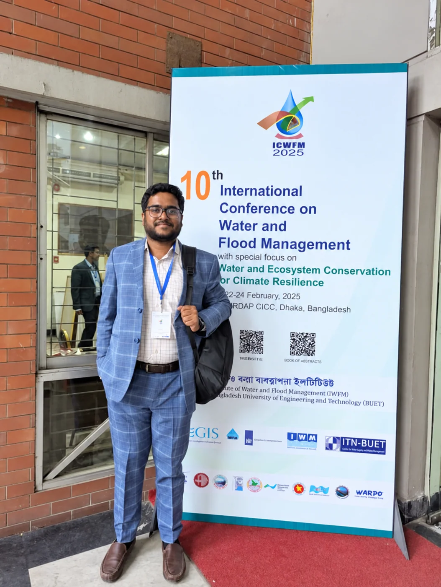

GIS & Remote Sensing
Mapping, satellite image analysis and spatial databases that turn location data into evidence.

We bring environmental science, spatial technology, planning and digital skills together to help clients understand complex places and make better-informed decisions.
Founded
2025
Based in
Bangladesh
Team
Twelve professionals across six practice units
SPEDAR Consultants is an emerging research and consultancy team, formed in 2025 by planners and environmental researchers who saw the value of combining their disciplines under one roof.
Our members have worked on assignments for national research institutes, engineering consultancies, development programmes and public agencies, and have published research on flood and drought vulnerability, land-use change, river erosion, green infrastructure and urban mobility. SPEDAR brings that experience together into a single, coordinated team.
We are building the practice deliberately. We currently take on focused, project-based assignments, research collaborations and technical support roles, and we are developing the capacity to deliver larger consultancy contracts independently and in partnership with other firms. Team members contribute on a project basis according to the expertise each assignment requires.
To deliver research-driven, practical and sustainable solutions by integrating environmental science, spatial technologies, urban and regional planning, data analytics and multidisciplinary expertise.
To become a trusted multidisciplinary consultancy supporting evidence-based planning, environmental sustainability, climate resilience and responsible development in Bangladesh and beyond.
A structured method that keeps each assignment tied to the decision it is meant to inform.
Clarify the decision to be made, the stakeholders involved, the geography and the constraints of time, budget and data.
Review literature and policy, assemble existing data, acquire satellite imagery and design field surveys where gaps remain.
Apply spatial, statistical and qualitative methods, check accuracy and test assumptions before drawing conclusions.
Translate findings into options and recommendations, weighing technical feasibility, cost, equity and environmental outcomes.
Deliver clear reports, maps, dashboards and presentations, and remain available to support implementation.
Each practice area is led by a team member with relevant training and project experience, and draws on colleagues from the other units.
Mapping, satellite image analysis and spatial databases that turn location data into evidence.
Baseline studies, climate vulnerability assessment and environmental monitoring support.
Land-use, settlement and infrastructure analysis for sustainable spatial development.
Applied research design, field surveys, socioeconomic assessment and technical reporting.
Data analysis, dashboards, interactive maps, websites and software prototypes.
Policy analysis, SDG-aligned research and resilience strategies for development programmes.

Chief Executive Officer & Managing Director
Tahatul leads SPEDAR's strategy, client relationships, proposals and quality review.
Tahatul is an urban and regional planner whose work combines GIS, environmental and climate research, and project coordination. He has supported GIS mapping and local hazard-preparedness planning with municipal authorities, technical analysis for waste-to-resource project planning, and community field-survey programmes as a facilitator and master trainer. He has authored and co-authored research on flood and drought vulnerability, land-use change, river erosion and transport.
The standards we hold ourselves to, and that clients can hold us to.
We describe our capabilities, methods and results honestly, including their limits.
We use sound methods, document our workflows and check our results before we share them.
We consider long-term environmental and social consequences in every recommendation.
We work openly with clients, communities and partner institutions, and value local knowledge.
We take responsibility for quality, deadlines and the confidentiality of client information.
We adopt new data sources and tools where they genuinely improve the evidence available to decision-makers.